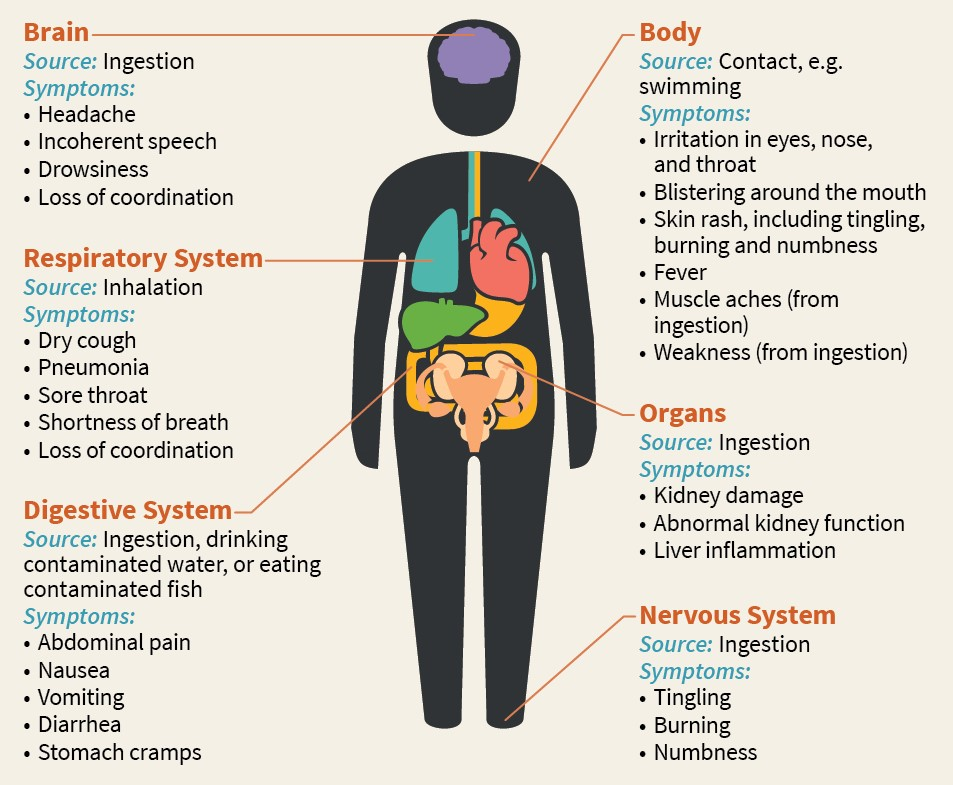

Welcome to Blue Marsh's Watershed Improvement Program for Blue-Green Algae
So, What is Blue-Green Algae, Anyway?
Blue-green algae, despite its name, is actually not algae at all, it’s a type of photosynthetic bacteria called cyanobacteria.
Blue-green algae is naturally occurring and found just about every environment – terrestrial and aquatic. Its growth is dependent on factors such as temperature, sunlight, and nutrient availability. Blue-green algae loves warm, slow moving water with lots of nutrients.
What does it look like?
When conditions are right, blue-green algae can grow quickly and form blooms, or areas of dense growth.
Blooms can have many different appearances but they typically look like green or blue globs of paint in the water, or scummy, bubbly foam.
Because blue-green algae thrives in certain conditions, algal blooms are more prevalent in warmer summer months, and can often be sparked after heavy rainfall.
So, why should we care?
Some blue-green algae species produce toxic compounds that are harmful to humans and can be fatal to pets, and wildlife.
When a blue-green algae bloom produces toxins it's referred to as a Harmful Algal Bloom (HAB). The health effects can vary depending on the exposure pathway, the duration of exposure, the type of toxins the bloom produces, and any existing health conditions.
Exposure can come from ingestion, inhalation, skin contact, and eye contact. Here are some common toxins and symptoms associated with them:
Microcystins: abdominal pain, nausea, vomiting, headache, diarrhea, sore throat, blistering around the mouth, and pneumonia.
Cylindrospermopsin: gastrointestinal symptoms, including vomiting and bloody diarrhea, as well as fever and headache.
Anatoxin-a: neurologic symptoms, including numbness, tingling, burning sensation, drowsiness, salivation, and speech disturbances.

Pets and Livestock are at greater risk.
Toxins from HABs can be deadly to pets and livestock. Pets and livestock can get very sick and die within hours to days after swallowing blue-green algae toxins.
Contact your veterinarian if you observe any of these symptoms after contact with water:
Loss of Energy
Loss of Appetite
Vomiting
Stumbing and Falling
Foaming at the Mouth
Diarrhea
Convulsions
Excessive drooling
Tremors and seizures
Any other sickness
What is being done about it?
Blue Marsh Lake currently utilizes two devices that stimulate the water, improves dissolved oxygen
Park Rangers monitor key water quality parameters that indicate the potential presence of blue-green algae.
Once blue-green algae is identified, water monitoring and sampling efforts increase and any warnings or notifications
are issued to the public.
So, What Now?
The goal of this program is to take a proactive approach to improve water quality and reduce blue-green algae at Blue Marsh Lake.
Blue Marsh is in a very rural area with about 75% of the contributing watershed being agricultural. Because of this, excess runoff of fertilizers and nutrients are being
introduced into the waters and promoting a prime environment for blue-green algae to flourish.
Our Plan
Along with this informational site, we have developed an interactive web map of the contributing watershed
of Blue Marsh Lake. The web map helps facilitate the identification of areas prone to erosion and excessive runoff. Park Rangers or other
interested parties can use this information to advocate for funding to install Best Management Practices (BMPs) at these locations in order to reduce
nutrients entering the waterways.
Welcome to Blue Marsh Lake's Targeted Watershed Improvement Program!
This project was started to educate park visitors about blue-green algae and
to provide park rangers a resource to identify locations for watershed improvements to help prevent blue-green algae growth.
Take a tour of our informational site to learn about blue-green algae: how it forms, health impacts, and what Blue Marsh Lake is doing about it. -or-
Check out the interactive web map to see the contributing waters to Blue Marsh Lake and potentially problematic areas